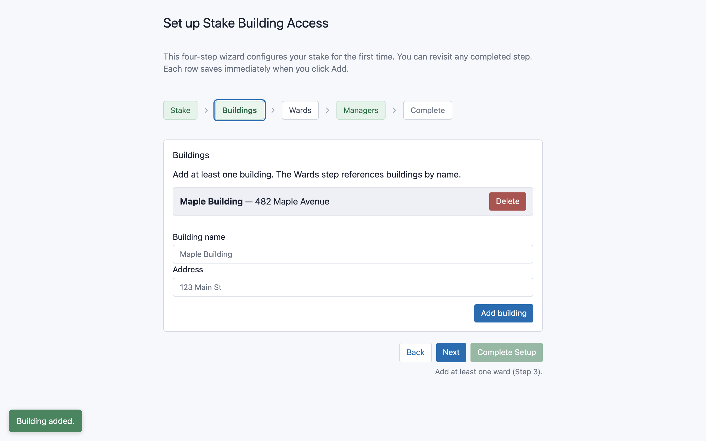
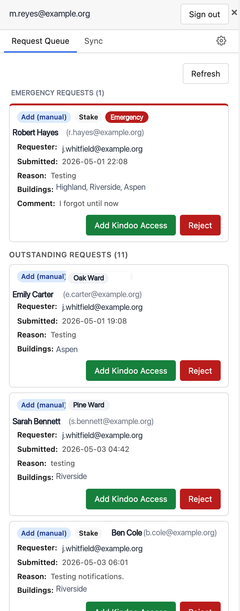
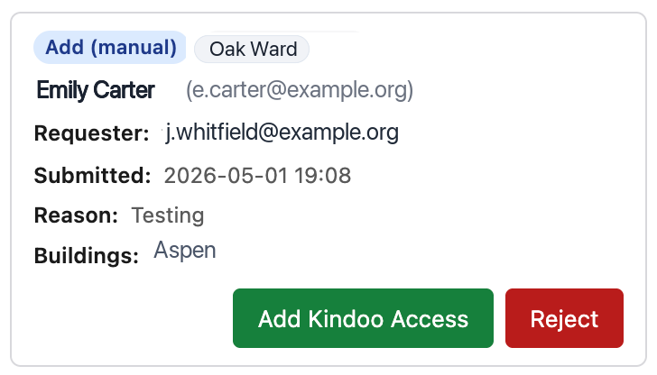
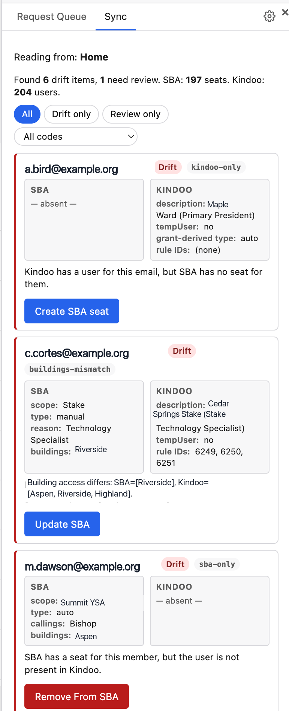
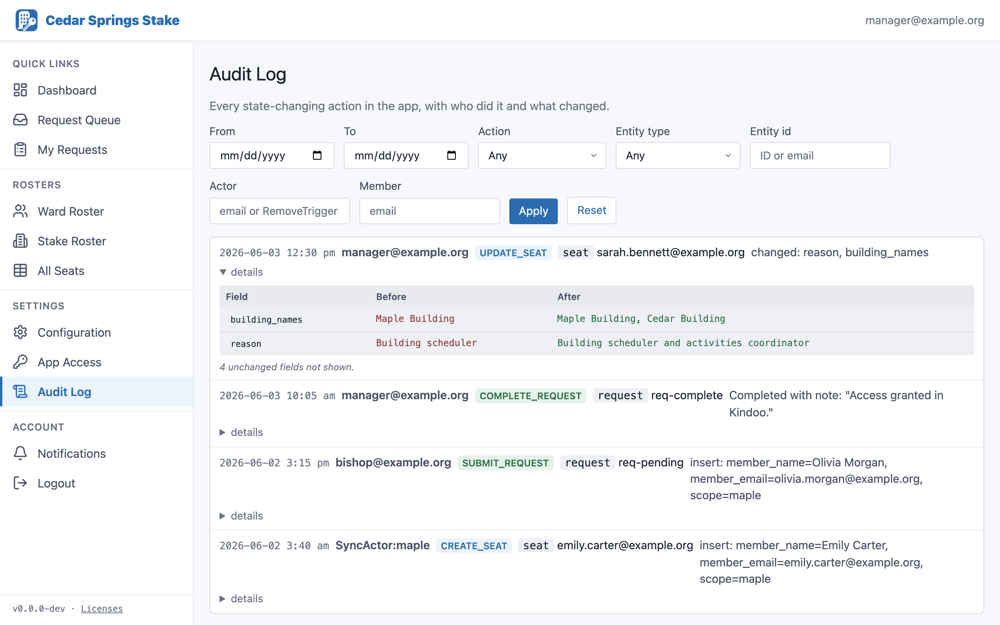

Stake Building Access
Kindoo Manager Guide
Everything you need to set up a stake, install the companion Chrome extension, and process building-access requests against Kindoo — from first run to daily work.
As a Kindoo Manager you are the bridge between Stake Building Access (SBA) and Kindoo. Leaders submit requests in SBA; you make the matching change in Kindoo by hand and mark the request complete. This guide covers both the SBA web app and the companion Chrome extension where most of your hands-on work happens.
1. Your role & how the pieces fit
Kindoo controls the doors and is the authoritative record of who has access. Kindoo has no programming interface, so access changes are made by hand inside Kindoo's admin site. SBA sits alongside Kindoo to organize the work:
- Leaders (Stake Presidencies, Bishoprics) submit requests in SBA.
- You review each request, make the change in Kindoo, and mark the request complete.
- SBA mirrors Kindoo's state so everyone can see who currently has access.
Your two tools
| Tool | What you do there |
|---|---|
| SBA web app stakebuildingaccess.org | See pending requests, view all seats, configure buildings/wards/sites, manage app access, and read the audit log. Mostly viewing and configuration — with one exception: from your phone you can hand a pending request to your own desktop to apply (Section 6). |
| Chrome extension "Stake Building Access — Kindoo Helper" | A panel that opens on top of Kindoo. This is where you provision access in Kindoo and complete or reject requests, and where you run Sync. |
Every change to Kindoo runs in the Chrome extension on your computer, because that's where you're signed in to Kindoo. The web app's Requests Queue is where you see what's waiting; rejecting a request happens only in the extension. The one thing you can start from the web app is an apply from your phone — and even then it's your own desktop that does the work. See Section 6.
Seat types recap
| Type | Source | How it ends |
|---|---|---|
| Automatic | A person's calling. Flows from the Church's records into Kindoo automatically. | When the calling ends. Sync removes the now-orphaned SBA seat. |
| Manual | Granted to a person on request. | When someone requests removal. |
| Temporary | Granted with an end date. | Kindoo expires it automatically; Sync clears the SBA seat. |
Between the end date and your next Sync, a temporary seat sits on the roster with the access already switched off in Kindoo. Leaders used to read that as cleanup and send you removal requests for it. Now those rows go grey with an Expired badge and lose both their remove and edit controls for everyone but you — the leader sees a line saying the seat clears at the next Sync, and if the person needs access again the leader has to wait for your Sync before submitting a fresh one — the New Request form counts the leftover row as an existing seat and blocks the duplicate until Sync clears it. Your own remove control stays, on the roster pages and on All Seats, where the badge shows you how many are waiting.
2. First-time setup: the stake wizard
When a stake is first created, the named bootstrap administrator signs in and is walked through a one-time setup wizard. (If you're standing up a new stake, this is you.) The stake itself is created by a platform administrator before you sign in — once that's done, signing in as the bootstrap admin starts the wizard automatically.
- Stake details. Confirm the stake name, set the overall stake seat cap, and decide whether Elders Quorum Presidents get app access (see Section 9). You can change any of these later under Configuration.
- Add at least one building. Buildings come first because every ward must point to a building.
- Add at least one ward. Give each ward a name, choose its building, and set its seat cap. Branches go in the same list — see the naming rule below.
- Add other Kindoo Managers (optional). You're added as a manager automatically and can't lock yourself out.
- Click Complete Setup. The stake goes live and you land on the manager Dashboard.
The ward list holds every unit of the Stake, branches included, and the name is the only thing that tells them apart — there's no separate setting. Type the name the way Kindoo shows it.
For a ward, the word “Ward” on the end is optional: Maple and Maple Ward mean the same ward, and either will match. For a branch, the name must end in “Branch” — Peterson Branch. Leave it off and the app files the unit as a ward and starts calling it “Peterson Ward” in Kindoo, which won't match what the Church's records put there.
The same rule applies later under Configuration → Wards.
Each step saves as you go, so you can close the wizard and pick up where you left off. Setup is one-time; after it's done, you make the same changes from Configuration in the web app.

3. Installing & configuring the Chrome extension
The companion extension, "Stake Building Access — Kindoo Helper," adds a slide-over panel to Kindoo's admin pages. It's where you provision access and complete requests.
- In Chrome, open the Chrome Web Store listing and click Add to Chrome.
- Open Kindoo's admin site and sign in to Kindoo as you normally would.
- Click the extension's toolbar button to open the panel, then sign in with the same email address you are registered under as a manager in SBA. The panel offers two buttons and either one works: Sign in with Google if that address is a Google account, or Sign in with email if it isn't.
- Navigate into a specific Kindoo site (not the "My Sites" listing). The panel needs to know which site you're on.
The button opens a Stake Building Access sign-in window — you don't need a Google account for it. Sign in there the way you normally sign in to the web app, then confirm on the card that follows: it names the account the extension will act as, and Connect the extension finishes the job. Check the name on that card. On a shared or family computer the browser may already be signed in as someone else, and the card is the only place that shows you whose account is about to be handed over; Not you? Use a different account switches it.
If you sign in with the emailed link rather than Google, expect one extra step: the link opens in a normal browser tab, not in that window. That's normal. Click the link there, come back to Kindoo, and press Sign in with email once more. The second try goes straight to the confirm card — one button left to press.
The toolbar button toggles the panel open and closed. The panel runs on top of Kindoo without changing Kindoo's own pages. If you manage more than one stake on the same Kindoo environment, the panel will ask which stake you're working in.
The extension matches the Kindoo site you're viewing to a site configured in SBA. If you see a message that the site isn't recognized, make sure you've opened a specific site in Kindoo (not the site list) and that the site exists under Configuration → Kindoo Config (see Section 8).
First-run setup: connect your buildings to Kindoo
The first time you open the panel on a recognized Kindoo site, it shows the Configure Kindoo wizard before the request queue. This one-time step links each of your SBA buildings to the Kindoo Access Rule that controls that building's doors.
An Access Rule is a Kindoo feature that grants a person access to a building's doors. When you process a request, the extension grants the member access by adding them to that building's Access Rule — so the Access Rule is what actually opens the doors. The building-to-rule mapping you set here is how the extension knows which rule to use for each building.
The extension does not create Access Rules; it only uses the ones that already exist in Kindoo. Before configuring the extension, sign in to Kindoo's admin site and make sure every building has its own Access Rule covering that building's doors. The wizard's dropdown lists these existing Kindoo rules — if a building doesn't have one yet, create it in Kindoo first, then return to the wizard.
- Make sure you're inside the specific Kindoo site you want to set up (not the "My Sites" list). The wizard configures one site at a time, based on the site you're currently viewing.
- For each building in the list, choose the matching Kindoo Access Rule from its dropdown. Every building must have a rule selected.
- Click Save. The panel then opens to the request Queue and is ready to use.
If your buildings span more than one Kindoo site (see Section 8), run the wizard once per site: switch to the other site in Kindoo's own interface, reopen the panel, and map that site's buildings. You can re-open the wizard any time from the panel's gear (settings) tab to change a mapping later.
The wizard only lists buildings that already exist in SBA and are assigned to the active Kindoo site. If one is missing, add or reassign it under Configuration → Buildings first. If the wizard reports the site isn't configured in SBA, add it under Configuration → Kindoo Config (Section 8), then reopen the panel.

4. The web app at a glance
Sign in at stakebuildingaccess.org. Managers land on the Dashboard. Here's what each page is for:
Dashboard
Your landing page. Three cards: pending request counts by type, recent activity (the latest audit entries), and utilization per ward and the stake. Each links through to the relevant detail page.
Requests Queue
Shows pending requests grouped into Emergency, Outstanding, and Future, oldest first. Use it to see what's waiting. Rejecting still happens in the extension; a card here can carry an Apply via extension button that hands the work to your own desktop, which is what makes the queue useful on a phone (Section 6).
All Seats
The full roster across every ward and the stake, with filters for scope, building, and type. You can request a removal from here, but there's no edit button (edits are made from the roster pages). A foreign-site member's row may show a Give Access To Stake Buildings button — see Section 8.
Configuration
Tabs, in order: Config (seat cap, time zone, notification switch, and the Elders Quorum Presidents Get App Access switch — see Section 9), Managers, Kindoo Config, Buildings, Wards, and Organizations. Buildings come before Wards because a ward must reference a building.
App Access
Shows who can sign in to the web app. Calling-based access is managed automatically and is read-only; you can add manual access for someone whose calling isn't on the standard list, at either Full or Limited level. See Section 9.
Audit Log
A filterable history of every change. See Section 12.
Notifications
Turn on push notifications for new requests, per device. See Section 11.
5. Processing requests (the daily workflow)
This is the core of the job. You'll work in Kindoo with the extension panel open beside it.
- Open Kindoo and navigate into the specific site the request is for.
- Open the extension panel and go to the Queue tab. Pending requests are grouped into Emergency → Outstanding → Future, oldest first.
- Read the request card: member, request type and scope, reason or removal reason, dates, buildings, comment, who requested it, and whether it's marked Emergency.
- Click the green action button — labelled Add Kindoo Access for an add request, Update Kindoo Access for an edit, or Remove Kindoo Access for a removal. The extension makes the change in Kindoo for you (inviting the person, granting or updating doors, or removing access), then marks the request complete in SBA.
- A result dialog confirms success. If a step failed, you can retry from the dialog.

Rejecting a request
Every card has a Reject button. Click it, enter a required rejection reason, and confirm. The requester is notified and sees your reason on their request.
Cards that can only be rejected
| Situation | What you'll see | Why |
|---|---|---|
| An "add" for someone who already has a seat | The Add Kindoo Access button is hidden with a "Member already has a seat — reject this request" notice. | Adding would collide with their existing seat. (Exception: granting a foreign-site member access to stake buildings is allowed — see below.) |
| An "edit" for a seat that no longer exists | "This request edits a seat that no longer exists — reject it." | There's nothing to edit; the seat was removed since the request was made. |
If the request is for a building on a different Kindoo site than the one you're currently viewing, the extension refuses to provision and tells you which site it needs: "This request needs to be provisioned on '<site name>'. Switch Kindoo sites and try again." Switch sites inside Kindoo's own interface, then retry. See Section 8.
Granting stake-building access to a foreign-site member
On All Seats, a member who only has access on a foreign Kindoo site may show a Give Access To Stake Buildings button. Use it to grant them access to the stake's home buildings without waiting for them to submit a request. A red warning notes that this consumes an additional Kindoo license, because the person has to be invited into the home Kindoo environment.
If you also serve as a stake leader or in a Bishopric, you may complete or reject requests you submitted yourself. The audit log records both who submitted and who completed.
6. Applying a request from your phone
You often learn a request is waiting while you're standing in a building with nothing but a phone. The Kindoo work still has to run in Chrome on your computer — that's where you're signed in to Kindoo — but you no longer have to be sitting there to start it. Tap Apply via extension on a pending card in the web app, and your own desktop Chrome does exactly what you would have done there: makes the change in Kindoo and marks the request complete.
Nothing runs on the phone, and nothing is saved up for a computer that's asleep. Your desktop has to be ready at the moment you tap — if it isn't, the phone tells you so instead of offering the button.
Turning it on
At the top of the extension's Queue tab there's a checkbox: Allow requests from my phone. Tick it once. It starts off, deliberately — it lets a second device set building access in motion, so it should be something you chose rather than something you inherited.
The setting belongs to the Chrome profile, not to you personally. Ticking it in one Kindoo tab covers every Kindoo tab in that copy of Chrome, so there's nothing to repeat per tab or per site. If you work from two computers, tick it on each one. Unticking it takes effect immediately — the buttons disappear from your phone rather than fading out later.
What has to be true for it to work
Three things, all on the computer:
- Chrome is open, with Kindoo open in a tab. A closed browser can't be woken.
- You're signed in to Kindoo in that tab. A Kindoo sign-in that has quietly expired counts as not ready — the extension checks by actually asking Kindoo, not by assuming it's still good.
- That tab is inside the Kindoo site the request needs. A tab can only make changes in the site it's currently in. If your stake spans more than one Kindoo site (Section 8), open a tab per site — one tab covers one site, two tabs cover both at once.
Putting the computer to sleep, closing the last Kindoo tab, and signing out of Kindoo all look the same from the phone: the buttons stop being offered within about three minutes.
Chrome installs extension updates in the background, and a Kindoo tab that was already open keeps running the previous copy — which stops answering your phone. Reloading the page fixes it. Worth trying first whenever the phone insists your desktop isn't there and you can see that it is.
Using it
Open Requests Queue in the web app on your phone. One line under the heading answers the only question that matters — what your desktop can do right now:
| The line says | What it means |
|---|---|
| "You can apply requests for <site> from here." | Ready. Every Kindoo site your open tabs cover is named, so two tabs on two sites read as both. |
| "Open Kindoo in Chrome on your computer to apply requests from here." | Nothing is live — Chrome closed, computer asleep, last Kindoo tab closed, or signed out of Kindoo. |
| "Your computer has a different stake open in Kindoo…" | Your desktop is fine, but the tab is sitting in another stake's Kindoo. Switch it to this stake. |
| "Turn on 'Allow requests from my phone' in the extension on your computer." | The checkbox is off, or hasn't been ticked on that computer yet. |
Each pending card your desktop can handle then carries an Apply via extension button. A card it can't handle right now says which site to open instead — "Open <site name> in Kindoo on your computer to apply this one." — so you're told what to go do rather than left to work it out from a failure.
While a request is being applied, its button is withheld — including from your other devices, since the queue shows the same work wherever you open it. Reloading the page mid-apply doesn't lose anything; the card picks the status back up.
What you'll see
The card reports progress as it happens: "Sent to your desktop — waiting for it to start…", then "Your desktop is applying this…", then the outcome. When it finishes, a dialog comes up with the result and stays until you press Dismiss — the same acknowledgement the desktop gives you. Tapping outside it or pressing Escape won't close it, because the whole point is that the outcome gets read rather than missed while the phone is in a pocket.
A successful apply shows what the desktop actually did in Kindoo, and — when completing the request pushed a ward or the stake past its seat cap — a "Now over cap:" list naming each pool and by how much. That warning has always appeared on the desktop; it now follows the work to your phone.
If several applies finish close together you'll get one dialog at a time, oldest first, each needing its own Dismiss. Every outcome is its own acknowledgement — a failure shouldn't be buried under a success that happened to land after it.
It's raised on the phone that sent the request, and dismissing it there is what retires it. Open the queue on a different device and you'll see the outcome on the card, but no dialog — that one isn't yours to acknowledge. A locked phone still shows you the result when you wake it, which is the case this is built for.
While your desktop is running a request you sent, the extension's Queue tab shows a banner saying so, and the queue refreshes itself when the job finishes. You don't need the panel open for any of this — a shut panel and a Sync tab both work fine.
When it doesn't work
| What you see | What happened | What to do |
|---|---|---|
| No Apply via extension on any card | Your desktop isn't reachable, or the checkbox is off. The line under the heading says which. | Follow that line. If Kindoo is open on the computer, reload the Kindoo tab — an extension update leaves the old copy running. |
| A card names a site to open | Your live tab is in a different Kindoo site than that request needs. | Open that site in Kindoo on the computer. The button appears on the card once a tab is inside it. |
| "Your desktop didn't pick this up." | Nothing claimed the request within about a minute and a half, so it was called off rather than left to run unattended later. | Get Kindoo open and signed in on the computer, then Try again on the card. |
| "Your desktop didn't finish this." | Your desktop started and then stopped before reporting back — the computer slept, the tab closed, Chrome quit. | Read the message before doing anything. It deliberately doesn't claim the change didn't happen, because nothing knows. Check the request on the desktop first. |
| "Applied in Kindoo, but this request is still open here." | The door change went through; marking the request complete didn't. | Finish that one from the desktop's own card. Don't re-apply — the access already exists. |
Dismiss is its only button. When a request really is worth another go, it's still sitting in the queue with a Try again on its card, which is where retrying belongs. When it has left the queue, retrying is the thing you don't want: re-applying an add that already went through invites the person into Kindoo a second time and consumes a second Kindoo licence, which nothing undoes afterwards.
While your desktop is applying a request you sent, that card's green action button on the desktop — Add Kindoo Access, or its Update / Remove equivalent — is disabled, with a line saying why. Running it both ways does the Kindoo work twice — and for someone not yet in Kindoo, the second run is a second invitation and a second licence. Reject stays available throughout, because rejecting changes nothing in Kindoo.
What it doesn't do
- Rejecting from the phone isn't offered. Rejection still happens in the extension, on the desktop.
- Nothing wakes a closed Chrome. No Kindoo tab open means no Kindoo change is possible, and the phone says so rather than queueing the work for later.
- It only ever reaches your own desktop. One manager's phone cannot hand work to another manager's computer.
7. Keeping SBA and Kindoo in sync
Because callings change in the Church's records (and flow into Kindoo) without going through SBA, SBA's seat list can drift from Kindoo's reality. Sync finds that drift and lets you reconcile it. Kindoo is always the source of truth — Sync only ever changes the SBA side; it never writes to Kindoo.
- In Kindoo, open the specific site you want to reconcile.
- In the extension panel, open Sync. It reads your SBA seats and your live Kindoo users for that site and lists the differences.
- Review each row and apply the suggested fix where appropriate. Some rows are review-only (no action).
What the drift rows mean
| What Sync found | Suggested fix |
|---|---|
In Kindoo, not in SBA (kindoo-only) | Create SBA seat — add the seat to SBA to match Kindoo. If the member already has an SBA seat but no access in this building's Kindoo site — say a stake-calling holder who has just been given a ward calling in a shared building — the button reads Add SBA grant instead, and the new access is added to their existing seat rather than creating a second one. Note: adding a grant this way records the door access but does not give the member SBA app access for that ward — if they need to see the ward in SBA (a new bishopric member, say), grant it yourself on the App Access page. |
In SBA, not in Kindoo (sba-only) | Remove from SBA — the access is gone in Kindoo, so clear the orphaned SBA seat. (This is also how expired temporary seats get cleaned up.) |
Calling differs (callings-mismatch) | Update SBA — replace the seat's calling(s) with Kindoo's. |
Scope differs (scope-mismatch) | Update SBA — move the seat to the scope Kindoo shows. |
Type differs (type-mismatch) | Update SBA — switch between automatic and manual to match Kindoo. |
Buildings differ (buildings-mismatch) | Update SBA — replace the seat's buildings with the doors Kindoo grants. |
Description doesn't match the format (kindoo-unparseable) | Update SBA — treat it as a stake-wide calling (home site only). |
Blank Kindoo description (kindoo-no-description) | Review only — nothing can be inferred; decide manually. |

Sync runs only when you start it — there's no schedule. Run it after callings change in your stake (new Bishopric, new Elders Quorum President, releases) and whenever a roster looks out of date. Newly-called leaders can't sign in to SBA until a Sync that picks up their calling has run. If you've just turned on Elders Quorum Presidents Get App Access, the backfill offered when you save that setting grants your current Elders Quorum Presidents access straight away — see Section 9.
There is no "update Kindoo" action in Sync — every fix only adjusts SBA to match what Kindoo already shows. The only way SBA writes into Kindoo is when you process a request from the queue (Section 5).
8. Managing multiple Kindoo sites
Most stakes run a single Kindoo environment — the home site. But a building's doors are sometimes governed by a different stake's Kindoo environment. SBA calls those Kindoo Sites so it can route door changes to the right environment.
- The home site is implied — you don't configure it as a separate entry.
- Foreign sites are added under Configuration → Kindoo Config.
- Each building can be assigned to a site; a ward inherits its site from its building.
- The extension discovers the active site's identifier automatically from the Kindoo page you're viewing.
To provision or sync a foreign-site building, you must be inside that Kindoo site in Kindoo. If you're on the wrong one, the extension refuses and tells you which site to switch to. Switch sites in Kindoo's own interface, then reopen the panel.
Seats on foreign-site wards draw against that site's seat pool, not your home stake's. They're excluded from your home-stake utilization, and each foreign ward's bar reflects what its own site allotted it.
9. App access: who can sign in
Whether a person can sign in to the SBA web app depends on their calling and on the kind of unit they hold it in. The lists are the same across the Church, with one setting your stake controls (Elders Quorum Presidents — see below):
| Scope | Callings that grant app access |
|---|---|
| Stake | Stake President · Stake Presidency First Counselor · Stake Presidency Second Counselor · Stake Clerk · Stake Executive Secretary · Stake High Councilor |
| Ward | Bishop · Bishopric First Counselor · Bishopric Second Counselor · Ward Clerk · Ward Executive Secretary · Elders Quorum President — only when your stake's setting is turned on, and at the LIMITED level |
| Branch | Branch President · Branch Presidency First Counselor · Branch Presidency Second Counselor · Branch Clerk · Elders Quorum President — only when your stake's setting is turned on, and at the LIMITED level |
Calling-based access is granted and removed automatically by Sync as callings change — these rows are read-only on the App Access page. For anyone outside that list who genuinely needs to sign in, use Add manual access and pick the right access level — see Full and Limited access below.
A branch gets four callings where a ward gets five: there is no Branch Executive Secretary, because branches don't have that calling. Assistant clerks grant no app access in either kind of unit.
SBA works out whether a unit is a ward or a branch from its name — a name ending in “Branch” is a branch, the same rule used everywhere else (see Section 2). So if a branch presidency can't sign in, check the unit's name under Configuration → Wards first: a branch stored without “Branch” on the end is treated as a ward, and a Branch President is not on the ward list.
Elders Quorum Presidents
Elders Quorum Presidents can assign temporary access for building cleaning and building lockup assignments. Not every stake works that way, so this one calling is a stake setting rather than a fixed rule. Turn on Elders Quorum Presidents Get App Access under Configuration → Config and every Elders Quorum President in your stake can sign in.
The access this calling grants is LIMITED, not full — it matches what the calling is for. An Elders Quorum President can request temporary access for their own ward's building, up to 90 days at a time, and can change or remove only those temporary seats. Ongoing access isn't offered to them, and automatic and ongoing rows on their roster show no Edit or Remove option. Full and Limited access below has the detail.
Three things to know:
- It's the president only. Elders Quorum counselors and the quorum secretary never get app access from this setting.
- It applies to units, not the stake. Wards and branches both, on the same terms. The stake-level list above is unchanged either way.
- A full grant outranks it. Levels are worked out per person per stake, so an Elders Quorum President you also give a full manual grant is full everywhere in the stake.
The setting decides what happens as callings change from here on. Anyone who already has access keeps it until their callings next change through Sync. That's why saving a change to this switch offers you a second step.
When you save the Config tab after changing this switch, SBA asks whether you also want to apply it to people who already hold the calling:
- Turning it on → Grant access now gives every current Elders Quorum President access immediately, instead of waiting for the next Sync run. Choose Not now to skip it.
- Turning it off → Revoke access now removes the access they were given. Choose Leave access in place to leave them alone.
Either way the setting itself is already saved — the question is only about people who already hold the calling. Manual access grants are never touched by this step, and it's safe to run more than once.
A newly-called leader can't sign in until a Sync run has picked up their calling from Kindoo. If someone reports they can't get in, run Sync and confirm their calling is current in Kindoo.
Full and Limited access
When you add a manual grant, the Add manual access dialog asks for an Access level. Full is the default and gives the person the same authority you'd expect of a Bishopric or Stake Presidency member for their scope. Limited is for someone who arranges short-term access — building cleaning, lockup assignments, a one-off event — without being responsible for ongoing access.
A limited person can do exactly four things, and nothing else:
- Submit temporary requests. The ongoing (manual) request type isn't offered to them.
- Ask for a window of at most 90 days.
- Request their own ward's building — no building picker. (A limited grant at stake scope is the exception: there's no single ward to tie it to, so the normal building list applies.)
- Change or remove temporary seats. Automatic and ongoing seats show them no Edit or Remove option at all.
Everything else is unchanged: their requests land in your queue like anyone else's, and you complete or reject them the same way.
The App Access page labels every row with its access level — either Full or LIMITED. In the table the badge sits in the Scope column, just after the scope name. In the card view it sits beside each calling or reason, because one scope can hold entries at different levels — a ward where the Bishop is Full and the Elders Quorum President is Limited, for instance.
There's no way to edit a grant's access level in place. Delete the existing grant, then use Add manual access to re-add the person at the level you want. Their sign-in isn't affected in between — but until you re-add them, they have no app access at all, so do both steps together.
This covers manual grants only. Calling-based rows are read-only — to change what an Elders Quorum President holds, either use the grant and revoke steps in the section above, or add them a full manual grant, which makes them full everywhere in the stake.
Access levels are worked out per stake, not per grant. If someone holds several grants, they're limited only when every one of them is limited. Add a full grant in any scope and they become full everywhere in that stake; delete their last full grant and they drop back to limited. Anyone who is an active Kindoo Manager is always full, whatever their grants say.
Every calling on the app-access list grants Full access except Elders Quorum President, which grants LIMITED access in stakes that have turned that setting on (see above). The level is recorded on the person's access record at the moment access is granted, so the App Access page shows the level each row actually carries — it never guesses from the calling's name. That's also why a president who had access before the change still reads Full: their record was written under the old rule and hasn't been rewritten.
A level change takes effect the next time the person's sign-in refreshes — within a couple of seconds if they're using the app, or up to about an hour if they've left it idle. Signing out and back in applies it immediately.
10. Seat caps & utilization
The stake has an overall cap, and each ward has its own seat cap. The Dashboard and All Seats show utilization bars that turn amber at 90% and red when over.
- The stake cap covers the home site's portion (the stake cap minus home-site ward seats).
- Per-ward caps flag an over-cap when a ward's seat count exceeds its cap.
- When a pool crosses from within-cap to over-cap, active managers get an over-cap email.
Sync-driven changes don't immediately recompute over-cap warnings — the count catches up the next time a request is completed. At normal volumes (a few requests a week) this resolves within days.
11. Notifications
| When | Who's emailed |
|---|---|
| A request is submitted | Active Kindoo Managers |
| A request is completed | The original requester |
| A request is rejected | The original requester |
| A request is cancelled | Active Kindoo Managers |
| A pool goes over cap | Active Kindoo Managers |
Emails come from noreply@mail.stakebuildingaccess.org with your stake's name in the sender. You can set a reply-to address and turn all email off with the Email Notifications Enabled switch in Configuration → Config — the same tab that carries the Elders Quorum Presidents Get App Access switch (Section 9).
Push notifications
On the Notifications page you can enable push notifications for new requests, per device. Enabling it on your phone doesn't affect your laptop, and vice versa.
12. The audit log
Every change to seats, requests, app access, managers, and stake settings is recorded automatically. The Audit Log page lets you filter by actor, action, entity, member, and date range, and expand any row to see exactly what changed (before/after). Automated actions made by Sync and the system appear under recognizable actor names rather than a person's email. The default view shows the last 7 days.

13. Troubleshooting
The extension can't tell which Kindoo site I'm on.
Open a specific Kindoo site rather than the "My Sites" listing. The panel identifies the active site from the page you're viewing, and the listing page is ambiguous.
"This request needs to be provisioned on '<site>'."
You're on the wrong Kindoo site for this request's buildings. Switch to the named site in Kindoo, then retry. (See Section 8.)
A request can only be rejected.
Either the member already has a seat (for an add) or the seat no longer exists (for an edit). Reject it; if access still needs changing, the requester can submit the right request. (See Section 5.)
My phone doesn't offer Apply via extension.
Read the line under the queue heading — it names the reason. In order of likelihood: the Allow requests from my phone checkbox is off on that computer; Kindoo isn't open there, or the Kindoo sign-in has expired; the open tab is in a different Kindoo site (or a different stake) than the request needs. If Kindoo genuinely is open and signed in, reload the Kindoo tab — an extension update leaves the old copy running in tabs that were already open, and that copy stops answering your phone. (See Section 6.)
The phone says my desktop didn't finish a request.
The desktop started the work and stopped before reporting back. The message deliberately doesn't say whether the change reached Kindoo, because nothing knows. Check that request on the desktop before applying it again — re-applying an add that already went through invites the person a second time and consumes a second Kindoo licence. (See Section 6.)
Someone was just made a manager but still can't act as one.
Role changes can take up to about an hour for an idle session, or a couple of seconds for an active one — signing out and back in refreshes it immediately.
A leader can't sign in to the web app.
Confirm their calling is on the app-access list (Section 9) and current in Kindoo, then run Sync. For exceptions, grant manual app access.
If they lead a branch, check the unit's name too. A branch is identified by its name ending in “Branch”; stored without it, the unit is treated as a ward, and Branch President is not on the ward list. Fix the name under Configuration → Wards, then run Sync.
An Elders Quorum President can't sign in.
Check that Elders Quorum Presidents Get App Access is on under Configuration → Config, then run Sync so their calling is picked up. If you turned that setting on and skipped the Grant access now step, a Sync run is what grants them access. Note the setting covers the president only — not quorum counselors or the secretary — and their calling must be current in Kindoo. (See Section 9.)
A leader says the request form only offers temporary access.
They have Limited access. On the App Access page, check the Scope column of their row for a LIMITED badge. Two things land someone there: a manual grant added at the Limited level, or the Elders Quorum President calling in a stake with that setting on. For a manual grant, delete it and re-add it at the Full level — there's no in-place level edit. For an Elders Quorum President, Limited is what the calling grants; give them a full manual grant if they need more. Either way, one full grant anywhere in the stake makes them full everywhere in it. (See Section 9.)
Someone with limited access can't submit — "This ward has no building configured."
A limited ward-scope request is tied to the ward's own building, and that ward has none set. Open Configuration → Wards, set the ward's building, and have them try again.
The extension won't sign in with email.
"Sign-in isn't complete yet" is usually not a problem. It's the normal note after you request a sign-in link: open the link from your email, then press Sign in with email again to finish. It appears whenever the sign-in window closes without finishing, and the extension can't see which reason applied — you closed it, you were part-way through the emailed link, or you read a message in it and closed it — so the note doesn't claim one.
The one case where pressing again won't help is a window that showed a configuration error before it closed. That window names the return address the extension asked for; send that address to whoever administers Stake Building Access for your stake, since it's what they need to fix it. If you installed the extension by hand rather than from the Chrome Web Store, reinstall it from the store listing first; a hand-installed copy is the usual cause.
A red message is different, and means something genuinely broke rather than a sign-in you didn't finish. One worth recognizing is a failure to load the sign-in page at all — check your internet connection first, and if that's fine, report it: it usually means the extension is pointed at the wrong address, which only an administrator can correct.
If the panel reports a failure mentioning mint_failed, the sign-in worked and the server couldn't issue the extension's session. Nothing on your end fixes that — contact support. Sign in with Google still works in the meantime if that address is a Google account.
The extension shows an error right after a new deployment.
If the panel reports a connection/CORS error, the environment's functions may still be deploying. Wait a moment and reopen the panel; if it persists, contact support.
14. Glossary
| Term | Meaning |
|---|---|
| Seat | One person's access record — the doors they can open in a given scope. |
| Scope | The stake, or one of its units — a ward or a branch. Requests and seats belong to a scope. |
| Unit | A ward or a branch. They live in the same list and are told apart by the name; see Section 2. |
| Building | A physical building with its own set of doors. Seats grant access per building. |
| Kindoo Site | A Kindoo environment that governs a set of buildings' doors. Home or foreign. |
| Automatic / Manual / Temporary | The three seat types — calling-based, ongoing, and time-limited. |
| Drift | A difference between SBA's seat list and Kindoo's actual state, surfaced by Sync. |
| Provision | Making the access change in Kindoo (inviting a user, granting doors) when completing a request. |
| Apply via extension | Starting a request from the web app — usually on your phone — and having your own desktop Chrome do the Kindoo work. See Section 6. |
| Organization | An optional stake-level grouping for seats, used for reporting against an organization's own cap. |
| Access level | Full or Limited — how much authority someone's app access carries. You choose it on a manual grant; the Elders Quorum President calling always grants Limited. See Section 9. |
15. Getting help
For app issues or questions this guide doesn't answer, email support@stakebuildingaccess.org. The extension is the "Stake Building Access — Kindoo Helper" listing on the Chrome Web Store.